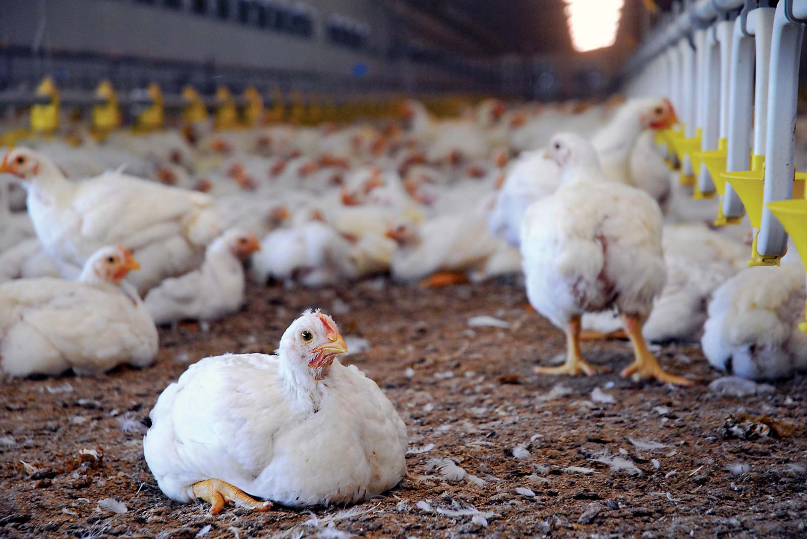
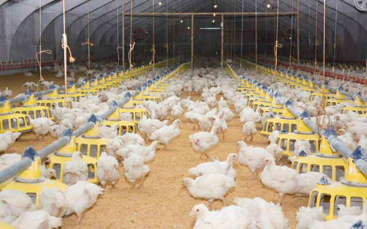

🐓 Benefits, Latest Information of Poultry Farming
🐤 Poultry farming is defined as ‘raising different types of domestic birds commercially for the purpose of meat, eggs and feather production’. It must be noted that the most common and widely raised poultry birds are chicken. Around 5k million chickens are being raised every year as a source of food (both meat and eggs of chicken). The chickens raised for eggs are called as layer chicken, and the chickens which are raised for their meat production are called broiler chickens.

🐤 Commercial poultry farming is also a very profitable business. It is one of the traditional business ventures. Today in this article we will inform you about the benefits of poultry farming business.
🥚 Benefits of Poultry Farming Business 🥚
🐤 Poultry farming business has plenty of benefits. Therefore, many farmers prefer to invest in this business. People generally establish poultry farm for the purpose of producing eggs, meat and generating high revenue from these products. Around, billions of chickens are raised throughout the world as a good source of food from their eggs and meat.
1. Less Capital Required:
The main benefit of poultry farming is that it doesn’t require high capital for starting. You just need basic capital to start raising poultry. Also, most of the poultry birds are not expensive to start raising.
2. No Need for a Big Space:
Poultry farming doesn’t need a big space unless you are going to start commercially. You can easily raise some birds on your own backyard with one or numerous coops or cages. Hence, if you are interested in poultry farming, then you can simply do it on your own backyard with several birds.
3. High Returns in Short Time Period:
Interestingly, commercial poultry farming business ensures high return of investment within a very short time period. Few poultry birds such as broiler chickens take shorter duration of time to mature and generating profit. Poultry products are not much expensive. It can be afforded by most of the people.
4. High Maintenance not required:
High maintenance is not required in poultry farm structures. Also, you can minimize diseases and illness in poultry by following proper hygiene and care. Diseases are less in some poultry birds such as quails, turkeys etc.
5. License not Compulsory:
It must be noted that, in most cases, you don’t need any license. As almost all types of poultry birds are domestic. Also getting license from the relevant authority is also easy for poultry.
6. Huge Global Demand:
Poultry gives you fresh and nutritious food and has a huge global demand. Therefore, global consumers of poultry products prefer them due to their nutrients and freshness.
7. Easy Marketing:
Marketing poultry products is very easy. There is an established market for poultry products in almost all places of the world. So you can easily sell the products in your nearest local market.
8. Income & Employment Opportunities:
Poultry farming creates income and employment opportunities. Unemployed educated youth can easily make a great income by raising poultry commercially. Women and students can also do this business.
9. Easy Bank Loans:
Almost all banks approve loans for these types of business ventures. So, if you want to start this business commercially, then you can apply for loans to your local banks. Almost all the top banks in India provide loans for poultry farming.
🏭 Latest Methods of Poultry Farming
1. Intensive & Free Range Poultry Farming:
According to Worldwatch institute, “Around 74% of total poultry meat and 68% of total poultry eggs are produced from intensive poultry farming method. Free range farming is the other alternative method of intensive poultry farming. This method is used for large number of poultry birds with high stocking density.
Some basic difference between intensive and free range poultry farming is that intensive poultry farming method is a highly efficient system which saves, land, feed, labor and other resources and increases production. Here, the poultry farming environment is fully controlled by the farmer. Therefore, it ensures continuous production throughout the year in any environment and seasons.
However, there are some disadvantages of Intensive poultry farming. Some people says intensive system generates health risks, abuse the animals and harmful for environment. On the other hand free range poultry farming method requires a large place for raising the birds and the production is about the same as intensive method. However, in the case of both intensive and free range poultry farming method, the producers must have to use nationally approved medications like antibiotics regularly to keep the poultry birds free from diseases.

2. Layer Poultry Farming
The poultry birds which are raised for egg production are known as layer poultry. Do you know that commercial hen generally starts laying eggs at the age of 12-20 weeks? Well yes, they start laying eggs regularly at their 25 weeks of age which after 70-72 weeks of age egg production of layer poultry get reduced.
For commercial layer poultry farming, producers generally keep the hens for 12 months from their first laying period. They then sell them for slaughter purpose. Though, chickens naturally survive for more than 6 years. For re-invigorating egg-laying, the hens are force moulted in some countries.
The environmental conditions are often automatically controlled by the producers. For example, presence of light helps the bird for laying eggs earlier. Hence, the producers should provide more lightening period to increase the probability of beginning laying eggs. The egg-laying bird lays more eggs in warmer months than the cold months.
Thus, keeping the temperature of the room moderate will be very helpful for better egg production. Surprisingly, few commercial egg laying chicken breeds can also produce more than 300 eggs a year. Layer poultry are raised in different methods. Here we will explain the common and most popular layer poultry farming systems.
3. Free Range Farming:
Free range poultry farming means giving freely roaming facilities to the poultry birds for a certain period of a day. In this method of farming, poultry birds are kept inside the house at night to keep them free from predators and adverse weather. Poultry birds generally roam freely throughout the whole day. It can be said that they spent half of their life outside the house.
For this type of farming, select a suitable land which has the facilities of adequate drainage system, good ventilation, appropriate protection from prevailing winds, good protection from all types of predators and free from excessive cold, heat or dampness. Excessive cold, heat and damp is very harmful for poultry birds which reduces their productivity. It requires less feed than cage and barn systems. The poultry manure from free range farming is used as fertilizer for crops directly.
Besides, all its advantages it has some difficulties too. Here, the poultry birds can be a victim of predators easily and may caught by different type of diseases.
4. Organic Method:
Organic layer poultry rearing system is also one type of free range farming system. But the important differences between the two systems are, in free range farming method a large numbers of poultry birds are raised together but in organic method a certain species of poultry bird are raised in small group with low stocking density. Organic laying system has few restrictions in the routine use of synthetic yolk colourants, water, feed, medications, other feed additives and obviously a smaller group size with low stocking density. The producer should keep highest 1000 poultry birds per hector and maximum 2000 birds in each house.
5. Yarding Method:
It is a very popular method used by small farmer. In this method, cows and chickens are raised together. The farmers make a fence in his yard and keep all the poultry birds and cattle there together.
6. Battery Cage Method:
Interestingly, it is one of the very common methods used in many countries. In this system usually small sized metal cages are used. Every cage can accommodate about 3 to 8 hens. Generally, the walls of the cages are made of mesh or solid metal and the floor is made of sloped wire mesh which allows the faeces to drop down. When the hens lays eggs, then all the eggs gather in the egg collecting conveyor belt of the cage.
In Battery Cage Method, food is given in front of the hens by a long bisected metal or plastic pipe and water served to them by using overhead nipple systems. The cages are arranged in long rows in one above another system. There may have many floors in a single shade which can keep many even thousands of hens together. For reducing feather and vent pecking, the light intensity is generally kept lower than 10 lux.
1. The main benefits of battery cage are as follows:
2. Taking care of the birds is very easy.
3. Easy to collect eggs of birds
4. Cleaner eggs
5. Requires less feed to produce eggs.
6. Thousands of hens may be housed in a specific floor space of the house.
7. The birds suffer less by internal parasites.
8. Labor cost is also very low.
However, this system has some difficulties too. By rearing large number of hens in a small place the air inside the house may contain high ratio of carbon dioxide. The hens can’t get enough space to walk, flap their wings, stand or perch. Therefore, they may suffer by frustration and boredom and their behaviors may change which affect their production.
This system is banned in some countries as it is considered against the animal welfare.
7. Furnished Cage Method:
It is a developed version of battery cage system. Here, the hens are provided with more spaces and facilities than battery cage system. It also contains sufficient space for walk, perch, flap their wings, nest, special feed and water pot etc.
8. Broiler Poultry Farming:
Broiler poultry can be defined as the poultry birds which are raised for commercial meat production. By using modern farming methods, broiler chickens become suitable for consumption within their 5 to 6 weeks of age.
9. Indoor Raising Methods:
In this system, the broilers are kept in a large and open house (known as growout houses). They become suitable for consumption within their 5 to 6 weeks of age. Rice hulls, wood shavings, peanut shells etc. are used as litter in the floor of the house. These poultry houses are well equipped with mechanical systems for delivering the feed and water to the poultry birds. However, good ventilation system, coolers and heaters are must. It is very important to keep the house always dry and clean. Generally a house of 400 feet long and 40 feet wide can accommodate about 20,000 birds. Per bird one-half square feet space is required.
10. Poultry Housing
Good and well managed housing plays a crucial role in raising all types of poultry birds. Some birds grow and live happily in the floor of poultry house and some in cages. According to the types of your birds, you have to make a suitable house and ensure availability of all types of necessary facilities for them.
📍 Tips to keep in mind while building houses for poultry birds:
1. Always keep enough space in your poultry house, depending on the birds. It will help your birds to live, grow and produce happily. Avoid overcrowding the poultry house.
2. Good ventilation system is a must. One should ensure that their poultry houses are well ventilated.
3. Ensure sufficient flow of fresh air and light inside the house.
4. For commercial production, make proper distance between two houses.
5. Clean the house and equipment on a regular basis. Must sterilize the house before bringing new chicks into your farm.
6. Must take steps for preventing all types of predators and harmful animals.
7. Maintain good temperature so that birds do not suffer by excessive hot or cold.
8. Suitable drainage system inside the house is a must for cleaning it properly.
9. Making poultry houses in calm and quiet place is a good idea.
🥜 Feeding
One must always feed high quality, fresh and nutritious food. It ensures good health, proper growth and high production. Hence, feed your poultry birds a healthy and nutritious feeds. It is important to add all types of necessary vitamins and minerals to their feed. Besides, feeding your birds a high quality and nutritious feeds, always serve them sufficient amount of fresh and clean water according to their demand.
💉 Care & Management
We must always take good care of our birds. It is important to learn more about various types of poultry diseases, symptoms and treatment. Timely vaccination of the birds is necessary. They must be provided with nutritious feed and clean water. There houses should be cleaned on a regular basis.
🛒 Marketing
Marketing process of various types of poultry products is very easy as they have a huge demand globally. So you don’t have to worry about marketing your products. You can easily sell your farm products in your nearest local market or big supermarkets.
If you are planning about setting up a poultry farm, then read and learn as much as possible about poultry farming. You can also visit your nearest farmers who are already raising different types of poultry birds.